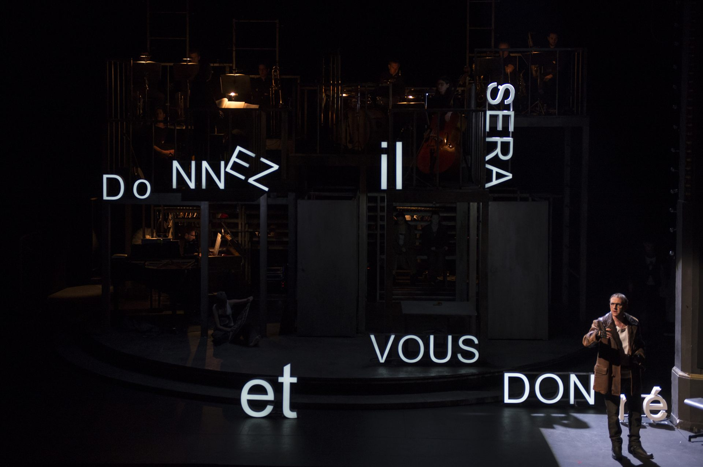
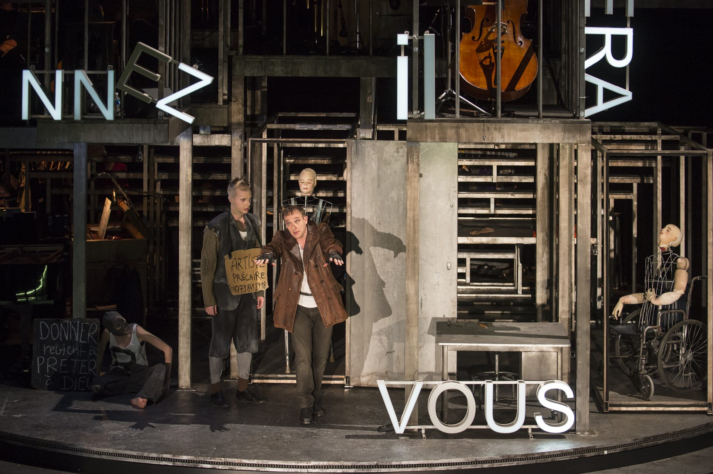
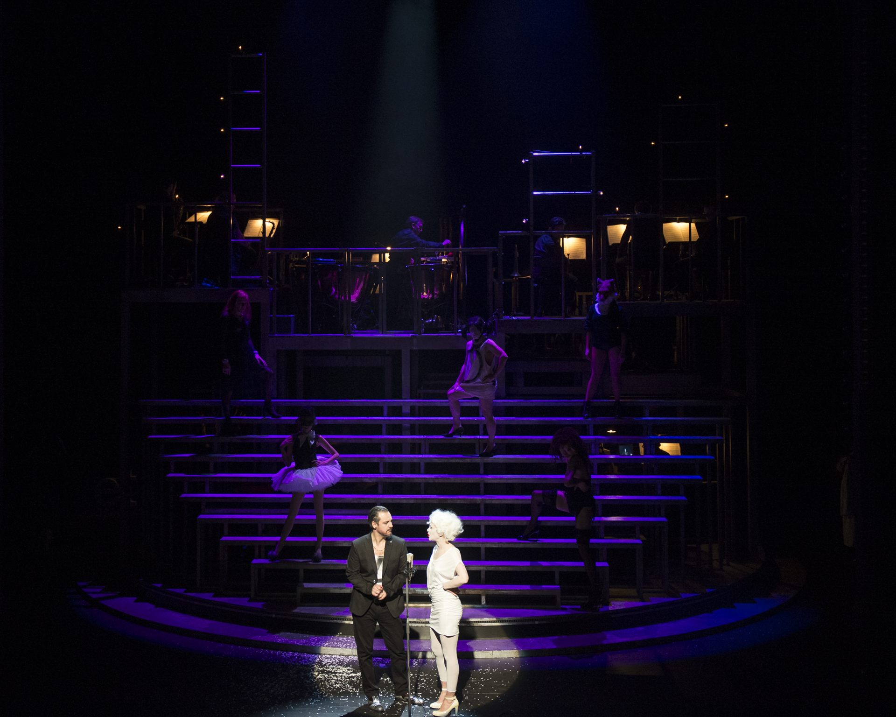
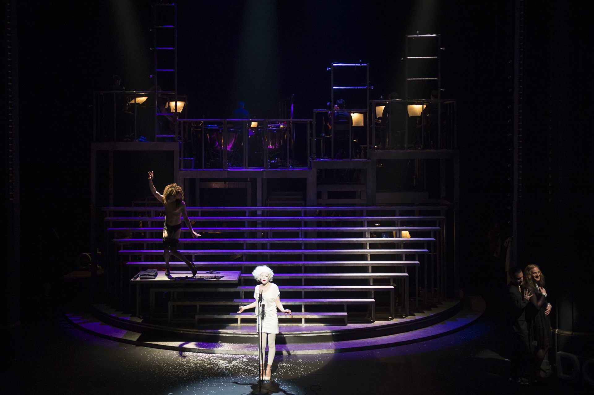
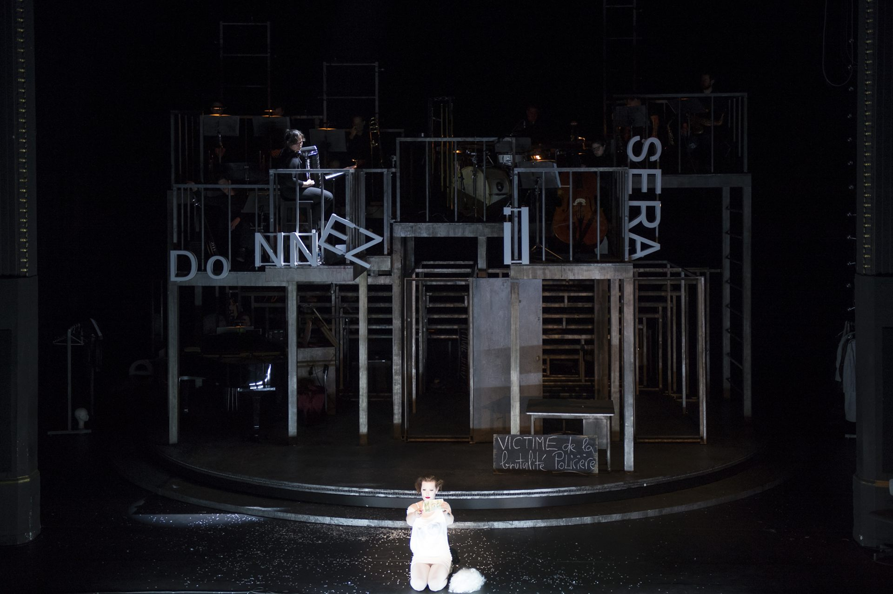
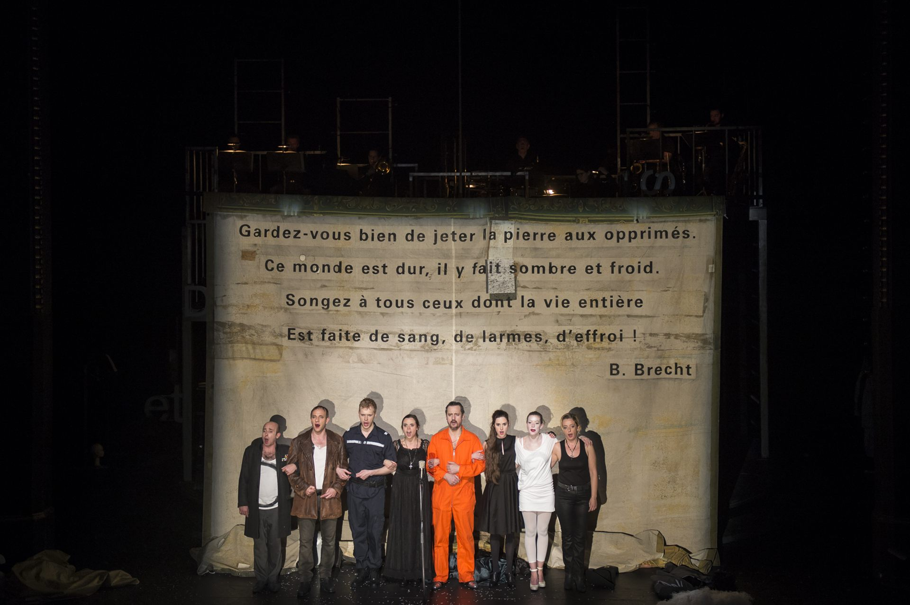
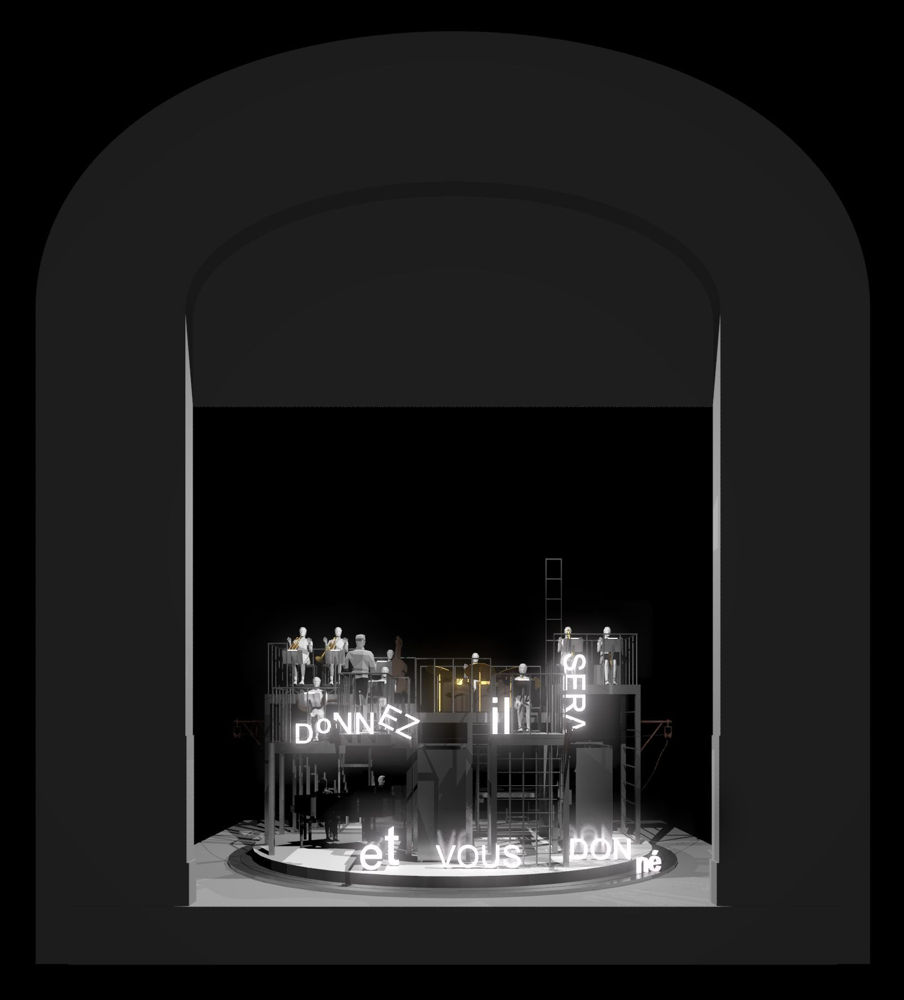

After the success of On ne paie pas, on ne paie pas! in 2013, Cristian Taraborrelli returns to the Comédie de Genève, designing the scenography for The Threepenny Opera, directed by Joan Mompart.
A powerful visual interpretation where the stage becomes a ruthless mechanism, mirroring a corrupt and cynical world. The scenographic design enhances the raw and grotesque aesthetic of the opera, transforming the space into a fragmented, industrial, and decayed city, composed of sharp lights and shifting structures that trap and free the characters.
Dopo il successo di On ne paie pas, on ne paie pas! nel 2013, Cristian Taraborrelli torna alla Comédie de Genève, firmando la scenografia per L’Opéra de Quat’Sous, con la regia di Joan Mompart.
Un’interpretazione visiva potente in cui il palcoscenico diventa un meccanismo spietato, specchio di un mondo corrotto e cinico. Il progetto scenografico esalta l’estetica cruda e grottesca dell’opera, trasformando lo spazio in una città frammentata, industriale e decadente, composta da luci taglienti e strutture mobili che intrappolano e liberano i personaggi.
Après le succès de On ne paie pas, on ne paie pas ! en 2013, Cristian Taraborrelli revient à la Comédie de Genève, signant la scénographie de L’Opéra de Quat’Sous, mis en scène par Joan Mompart.
Une interprétation visuelle puissante où la scène devient un mécanisme impitoyable, miroir d’un monde corrompu et cynique. Le projet scénographique magnifie l’esthétique brute et grotesque de l’œuvre, transformant l’espace en une ville fragmentée, industrielle et décrépite, composée de lumières tranchantes et de structures mouvantes qui emprisonnent et libèrent les personnages.
L'Opera — Brecht e Weill, Berlino 1928
L'Opera da tre soldi (Die Dreigroschenoper) debutta al Theater am Schiffbauerdamm di Berlino il 31 agosto 1928: scrittura del testo è di Bertolt Brecht (Augusta, 1898 – Berlino Est, 1956), partitura di Kurt Weill (Dessau, 1900 – New York, 1950), traduzione delle ballate dall'inglese a cura di Elisabeth Hauptmann. La fonte è The Beggar's Opera di John Gay e Johann Christoph Pepusch (Londra, 1728): un'opera-ballata in tre atti che metteva in scena la malavita della Londra georgiana per parodiare il melodramma italiano e satirizzare la corruzione politica. Brecht la rilegge a duecento anni di distanza per farne il manifesto del teatro epico: sospensione dell'illusione, canzoni che interrompono l'azione, didascalie proiettate, narratore in scena, attori che si rivolgono direttamente al pubblico.
La partitura di Weill mescola con genio cabaret berlinese, jazz americano, foxtrot, tango, marcia, ballata, finto barocco. Inventa un suono — voci scoperte, fiati taglienti, banjo, sassofono — che diventerà la cifra del teatro musicale del Novecento. Le ballate — Die Moritat von Mackie Messer («Mackie il pirata»), Seeräuber-Jenny («Jenny dei pirati»), Die Ballade von der sexuellen Hörigkeit — entrano nel repertorio universale, riprese da Lotte Lenya, Louis Armstrong, Bobby Darin, Frank Sinatra, Sting, Nick Cave. Mackie Messer diventa Mack the Knife: l'antieroe che attraversa i decenni e i continenti.
Cinque anni dopo, Brecht e Weill sono in fuga: il 1933 hitleriano li costringe all'esilio — Brecht in Svezia, Finlandia, Stati Uniti, poi nella DDR; Weill a Parigi (dove scrive proprio Marie Galante), poi a New York. Die Dreigroschenoper è così non solo un capolavoro del cabaret weimariano: è il testamento di una città e di un'epoca che sta per essere bruciata, l'ultima fotografia della Berlino sospesa fra l'arte d'avanguardia e la catastrofe imminente.
The Threepenny Opera (Die Dreigroschenoper) premiered at Berlin's Theater am Schiffbauerdamm on 31 August 1928: text by Bertolt Brecht (Augsburg, 1898 – East Berlin, 1956), score by Kurt Weill (Dessau, 1900 – New York, 1950), ballads translated from English by Elisabeth Hauptmann. The source is The Beggar's Opera by John Gay and Johann Christoph Pepusch (London, 1728): a ballad opera in three acts that staged Georgian London's underworld to parody Italian melodrama and satirise political corruption. Brecht re-reads it two hundred years later to turn it into the manifesto of epic theatre: suspension of illusion, songs that interrupt the action, projected captions, narrator on stage, actors addressing the audience directly.
Weill's score blends with genius Berlin cabaret, American jazz, foxtrot, tango, march, ballad, mock baroque. He invents a sound — uncovered voices, cutting brass, banjo, saxophone — that will become the signature of twentieth-century musical theatre. The ballads — Die Moritat von Mackie Messer («Mack the Knife»), Seeräuber-Jenny («Pirate Jenny»), Die Ballade von der sexuellen Hörigkeit — entered the universal repertoire, taken up by Lotte Lenya, Louis Armstrong, Bobby Darin, Frank Sinatra, Sting, Nick Cave. Mackie Messer became Mack the Knife: the antihero crossing decades and continents.
Five years later, Brecht and Weill were in flight: Hitlerian 1933 forced them into exile — Brecht to Sweden, Finland, the United States, then to the GDR; Weill to Paris (where he wrote Marie Galante itself), then to New York. Die Dreigroschenoper is therefore not only a masterpiece of Weimar cabaret: it is the testament of a city and an age about to be burnt, the last photograph of a Berlin suspended between avant-garde art and impending catastrophe.
L'Opéra de quat'sous (Die Dreigroschenoper) créé au Theater am Schiffbauerdamm de Berlin le 31 août 1928 : texte de Bertolt Brecht (Augsbourg, 1898 – Berlin-Est, 1956), partition de Kurt Weill (Dessau, 1900 – New York, 1950), traduction des ballades de l'anglais par Elisabeth Hauptmann. La source est The Beggar's Opera de John Gay et Johann Christoph Pepusch (Londres, 1728) : un opéra-ballade en trois actes mettant en scène la pegre londonienne géorgienne pour parodier le mélodrame italien et satiriser la corruption politique. Brecht le relit deux cents ans plus tard pour en faire le manifeste du théâtre épique : suspension de l'illusion, chansons qui interrompent l'action, didascalies projetées, narrateur en scène, acteurs s'adressant directement au public.
La partition de Weill mêle avec génie cabaret berlinois, jazz américain, fox-trot, tango, marche, ballade, faux baroque. Il invente une sonorité — voix découvertes, cuivres tranchants, banjo, saxophone — qui deviendra la signature du théâtre musical du XXe siècle. Les ballades — Die Moritat von Mackie Messer (« Mackie le pirate »), Seeräuber-Jenny (« Jenny des corsaires »), Die Ballade von der sexuellen Hörigkeit — entrent dans le répertoire universel, reprises par Lotte Lenya, Louis Armstrong, Bobby Darin, Frank Sinatra, Sting, Nick Cave. Mackie Messer devient Mack the Knife : l'antihéros qui traverse les décennies et les continents.
Cinq ans plus tard, Brecht et Weill sont en fuite : 1933 hitlérien les contraint à l'exil — Brecht en Suède, en Finlande, aux États-Unis, puis en RDA ; Weill à Paris (où il écrit précisément Marie Galante), puis à New York. Die Dreigroschenoper n'est donc pas seulement un chef-d'œuvre du cabaret weimarien : c'est le testament d'une ville et d'une époque sur le point d'être brûlées, la dernière photographie d'un Berlin suspendu entre l'art d'avant-garde et la catastrophe imminente.
Mompart × Taraborrelli — Il sodalizio svizzero
Joan Mompart (Lleida, Catalogna, 1971) è uno dei registi più importanti del teatro francofono contemporaneo. Formatosi all'Institut del Teatre di Barcellona e all'École d'Art Dramatique de Genève, fonda con i compagni di studi la Compagnia Llum Teatre a Ginevra. Direttore del teatro per ragazzi Am Stram Gram di Ginevra dal 2010 al 2017, è oggi una delle voci più ascoltate della scena svizzero-francese, regolare alla Comédie de Genève e su tutta la rete delle Scènes Nationales francesi.
Il sodalizio con Cristian Taraborrelli si apre nel 2013 con On ne paie pas, on ne paie pas! di Dario Fo (Comédie de Genève + Llum Teatre) e attraversa quattro grandi produzioni in tre anni: Münchhausen? di Fabrice Melquiot (Am Stram Gram, 2013), Ventrosoleil di Douna Loup (Ensemble Contrechamps, 2014), e questa L'Opéra de Quat'sous del 2016. Quattro lavori, quattro registri diversi (commedia politica, fiaba per bambini, jeune public, opera musicale), un'unica firma scenica: scenografie sempre concettuali, mobili, povere di mezzi e ricche di idee, costruite intorno a un dispositivo unificante — il girevole, la tribuna, la cattedrale di tulle, la macchina post-truth.
Per L'Opéra de Quat'sous il dispositivo è il palcoscenico girevole: una piattaforma rotante che permette al regista di passare in continuità dal bordello di Mrs. Peachum alla scuderia di Mackie, dalla cella della prigione alla strada del corteo nuziale. Il giro è il tempo brechtiano della storia che si fa oggetto, dell'azione che si rovescia in epica. La struttura metallica costruita da Taraborrelli è insieme impalcatura industriale, gabbia, palcoscenico nel palcoscenico: i musicisti sono in vista, le luci di servizio non si nascondono, i cambi di scena avvengono davanti al pubblico. Tutto lo spettacolo confessa di essere uno spettacolo — che è esattamente quello che Brecht voleva.
Joan Mompart (Lleida, Catalonia, 1971) is one of the most important directors of contemporary francophone theatre. Trained at the Institut del Teatre in Barcelona and at the École d'Art Dramatique de Genève, he founded with his classmates the Llum Teatre company in Geneva. Director of the children's theatre Am Stram Gram in Geneva from 2010 to 2017, he is today one of the most listened-to voices on the Swiss-French scene, a regular at the Comédie de Genève and across the network of French Scènes Nationales.
The bond with Cristian Taraborrelli opens in 2013 with Dario Fo's On ne paie pas, on ne paie pas! (Comédie de Genève + Llum Teatre) and runs across four major productions in three years: Münchhausen? by Fabrice Melquiot (Am Stram Gram, 2013), Ventrosoleil by Douna Loup (Ensemble Contrechamps, 2014), and this L'Opéra de Quat'sous in 2016. Four works, four different registers (political comedy, fairy tale for children, jeune public, musical opera), one stage signature: scenographies always conceptual, mobile, poor in means and rich in ideas, built around a unifying device — the revolve, the tribune, the cathedral of tulle, the post-truth machine.
For L'Opéra de Quat'sous the device is the revolving stage: a rotating platform that lets the director slide continuously from Mrs. Peachum's brothel to Mackie's stable, from the prison cell to the wedding procession's street. The turn is Brechtian time, of history made object, of action overturned into epic. The metal structure built by Taraborrelli is at once industrial scaffolding, cage, theatre-within-theatre: the musicians are in plain sight, work lights are not hidden, scene changes happen before the audience. The whole show confesses itself a show — which is exactly what Brecht wanted.
Joan Mompart (Lleida, Catalogne, 1971) est l'un des metteurs en scène les plus importants du théâtre francophone contemporain. Formé à l'Institut del Teatre de Barcelone et à l'École d'Art Dramatique de Genève, il fonde avec ses camarades d'études la Compagnie Llum Teatre à Genève. Directeur du théâtre pour la jeunesse Am Stram Gram de Genève de 2010 à 2017, il est aujourd'hui l'une des voix les plus écoutées de la scène suisse romande, régulier à la Comédie de Genève et sur l'ensemble du réseau des Scènes Nationales françaises.
Le sodalité avec Cristian Taraborrelli s'ouvre en 2013 avec On ne paie pas, on ne paie pas ! de Dario Fo (Comédie de Genève + Llum Teatre) et traverse quatre grandes productions en trois ans : Münchhausen ? de Fabrice Melquiot (Am Stram Gram, 2013), Ventrosoleil de Douna Loup (Ensemble Contrechamps, 2014), et cet L'Opéra de Quat'sous de 2016. Quatre œuvres, quatre registres différents (comédie politique, conte pour enfants, jeune public, opéra musical), une seule signature scénique : des scénographies toujours conceptuelles, mobiles, pauvres en moyens et riches en idées, construites autour d'un dispositif unifiant — le tournant, la tribune, la cathédrale de tulle, la machine post-truth.
Pour L'Opéra de Quat'sous le dispositif est le plateau tournant : une plateforme rotative qui permet au metteur en scène de glisser sans rupture du bordel de Mrs. Peachum à l'écurie de Mackie, de la cellule de prison à la rue du cortège nuptial. Le tour est le temps brechtien, celui de l'histoire qui se fait objet, de l'action qui se renverse en épopée. La structure métallique construite par Taraborrelli est à la fois échafaudage industriel, cage, théâtre dans le théâtre : les musiciens sont à vue, les lumières de service ne se cachent pas, les changements de décor se font devant le public. Tout le spectacle confesse être un spectacle — ce qui est exactement ce que Brecht voulait.
La Scenografia
An unstable urban landscape that breathes and transforms, evoking the chaos and precariousness of the society portrayed by Brecht and Weill. The scenography does not merely frame the narrative but amplifies it, immersing the audience in a distorted and vibrant universe where the boundary between reality and fiction dissolves.
Cleverly placed on a revolving stage, Taraborrelli’s set creates a space that is both open and contained, intimate and collective. In this environment, musicians and actors engage in a breathless and irreverent performance, where derision and exhilaration surface at every turn of the platform.
Un paesaggio urbano instabile che respira e si trasforma, evocando il caos e la precarietà della società ritratta da Brecht e Weill. La scenografia non si limita a incorniciare la narrazione ma la amplifica, immergendo il pubblico in un universo distorto e vibrante dove il confine tra realtà e finzione si dissolve.
Posizionata con acume su un palcoscenico girevole, la scenografia di Taraborrelli crea uno spazio al contempo aperto e contenuto, intimo e collettivo. In questo ambiente, musicisti e attori si lanciano in una performance irriverente e travolgente, dove la derisione e l’euforia emergono a ogni rotazione della piattaforma.
Un paysage urbain instable qui respire et se transforme, évoquant le chaos et la précarité de la société dépeinte par Brecht et Weill. La scénographie ne se contente pas d’encadrer le récit mais l’amplifie, plongeant le public dans un univers distordu et vibrant où la frontière entre réalité et fiction se dissout.
Habilement placée sur un plateau tournant, le décor de Taraborrelli crée un espace à la fois ouvert et contenu, intime et collectif. Dans cet environnement, musiciens et acteurs s’engagent dans une performance effrontée et haletante, où la dérision et l’exaltation surgissent à chaque rotation de la plateforme.
Foto di Scena








Photos © Carole Parodi
Video
Rassegna Stampa
« Une scénographie astucieuse, structure légère qui offre à l’orchestre une tribune en hauteur, et permet, en dessous, des circulations simples et efficaces pour les comédiens-chanteurs. Ce dispositif a été imaginé par Cristian Taraborrelli. » « Una scenografia astuta, struttura leggera che offre all’orchestra una tribuna in alto, e permette, sotto, circolazioni semplici ed efficaci per gli attori-cantanti. Questo dispositivo è stato immaginato da Cristian Taraborrelli. » « An ingenious set design, a light structure that offers the orchestra an elevated platform, and allows, below, simple and effective movement for the actor-singers. This device was imagined by Cristian Taraborrelli. »
— Le Figaro, Armelle Héliot · 13 avril 2016
« Le spectacle se distingue par une scénographie colossale. Cristian Taraborrelli a imaginé une structure métallique tournante dont chaque facette représente un lieu de l’action tandis qu’en son sommet siège l’orchestre, observateur impérial de la déchéance du monde d’en bas. » « Lo spettacolo si distingue per una scenografia colossale. Cristian Taraborrelli ha immaginato una struttura metallica girevole la cui ogni facciata rappresenta un luogo dell’azione, mentre alla sommità siede l’orchestra, osservatore imperiale della decadenza del mondo sottostante. » « The production stands out for its colossal set design. Cristian Taraborrelli imagined a revolving metal structure whose every facet represents a location of the action, while at its summit sits the orchestra, an imperial observer of the world’s decay below. »
— Sceneweb · 5 avril 2016
« La scénographie ? Un entrelacs d’échafaudages et d’escaliers métalliques, installé sur une tournette. L’orchestre est à l’étage, à vue. Cette ambiance de cabaret d’acier, froide et sombre, sert bien le propos. » « La scenografia? Un intreccio di impalcature e scale metalliche, installato su un palcoscenico girevole. L’orchestra è al piano superiore, a vista. Questa atmosfera da cabaret d’acciaio, fredda e cupa, serve bene il proposito. » « The set design? An interweaving of scaffolding and metal staircases, installed on a revolving stage. The orchestra is on the upper level, in full view. This steel-cabaret atmosphere, cold and dark, serves the purpose well. »
— Valeurs Actuelles · 7 avril 2016
« Surplombant le décor magistral de Cristian Taraborrelli, astucieusement placé sur tournette, dans un espace à la fois ouvert et resserré, intime et collectif, musiciens et comédiens dialoguent avec le public, dans un jeu époustouflant et irrévérencieux où affleurent dérision et jubilation. » « Dominando il magistrale décor di Cristian Taraborrelli, astutamente posizionato su un palcoscenico girevole, in uno spazio al contempo aperto e raccolto, intimo e collettivo, musicisti e attori dialogano con il pubblico, in un gioco travolgente e irriverente dove affiorano derisione e giubilo. » « Overlooking the masterful set by Cristian Taraborrelli, ingeniously placed on a revolving stage, in a space that is both open and intimate, collective and personal, musicians and actors engage with the audience in a breathtaking and irreverent performance where mockery and jubilation surface. »
— Un Opéra de quat’sous épique et politique · 8 avril 2016
« L’astucieuse scénographie de Cristian Taraborrelli révèle les entrelacs d’une ville avec ses quartiers mal famés et ses ruelles étroites : celui des prostituées, dominé par un immense escalier ; la scène tourne et nous voilà dans le quartier des mendiants ou en prison. » « L’astuta scenografia di Cristian Taraborrelli rivela gli intrecci di una città con i suoi quartieri malfamati e i suoi vicoli stretti: quello delle prostitute, dominato da un’immensa scalinata; la scena ruota e ci troviamo nel quartiere dei mendicanti o in prigione. » « Cristian Taraborrelli’s ingenious set design reveals the interlacing of a city with its ill-famed quarters and narrow alleyways: that of the prostitutes, dominated by an immense staircase; the stage turns and we find ourselves in the beggars’ quarter or in prison. »
— La Terrasse · 12 avril 2016
« Le scénographe Cristian Taraborrelli souhaitait que le plateau évoque la silhouette d’une grande ville : fait de constructions métalliques, de portes, escaliers et barreaux, ce dernier se décline sur deux étages. Les musiciens, installés sur les structures métalliques, surplombent et accompagnent les acteurs-chanteurs. » « Lo scenografo Cristian Taraborrelli desiderava che il palcoscenico evocasse la silhouette di una grande città: fatto di costruzioni metalliche, porte, scale e sbarre, si sviluppa su due piani. I musicisti, installati sulle strutture metalliche, sovrastano e accompagnano gli attori-cantanti. » « Set designer Cristian Taraborrelli wanted the stage to evoke the silhouette of a great city: made of metal constructions, doors, staircases and bars, it unfolds over two floors. The musicians, installed on the metal structures, overlook and accompany the actor-singers. »
— Théâtre · 11 avril 2016
Link Stampa
Team Creativo
Tags